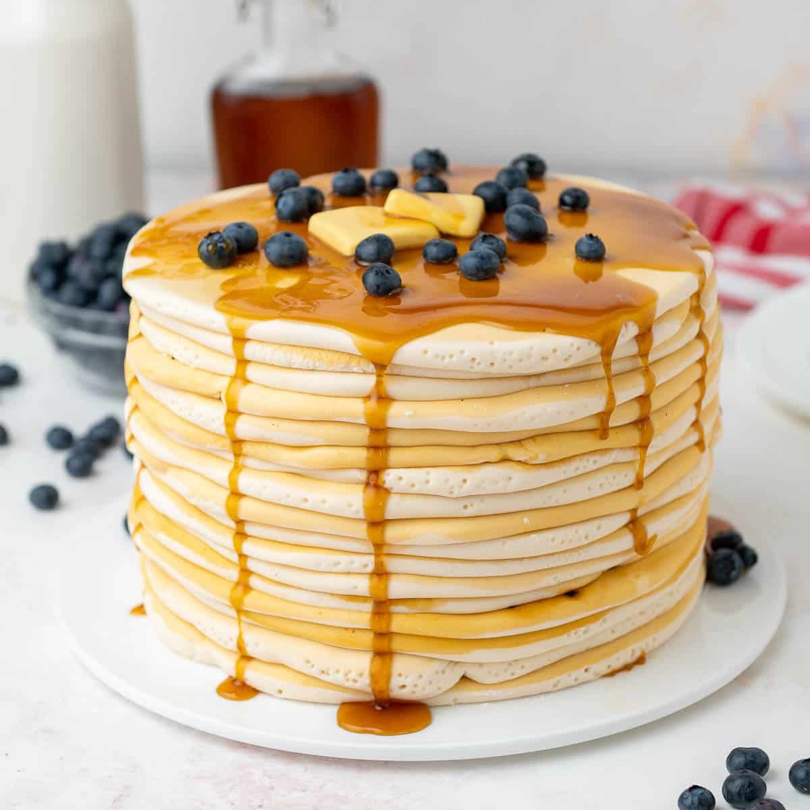

Frizz Kitchen

Ingredients
- 125 gr margarin
- 275 terigu protein rendah
- 25 tepung maizena
- 200 gr gula pasir
- 6 butir telur
- 1 sdt emulsifier (SP)
- 175 ml susu UHT
- 175 ml santan
Instructions
- Siapkan panci kukusan. Masukkan air cukup banyak. Lalu panaskan kukusan. Kemudian, Siapkan loyang diameter 24 cm, olesi dengan karlo atau margarin. Sisihkan dulu.
- Timbang margarin, lalu panaskan sampai meleleh saja, jangan sampai mendidih ya. Jika pakai microwave cukup 30-40 detik. Biarkan dingin.
- Siapkan mangkuk yang cukup besar. Lalu timbang terigu dan maizena. Lalu ayak, sisihkan.
- Siapkan bowl untuk mengocok telur. Masukkan gula pasir, telur dan emulsifier.
- Kocok dengan kecepatan tinggi, selama kurang lebih 10 menit, sampai mengembang, kental dan berjejak.
- Sekarang gunakan spatula. Masukkan susu cair. Aduk sampai merata. Kemudian masukkan margarin cair. Gunakan teknik aduk balik, agar margarin tercampur semua dan tidak ada yang mengendap didasar mangkuk. Pastikan semua sudah tercampur merata, tp jangan mengaduk berlebihan.